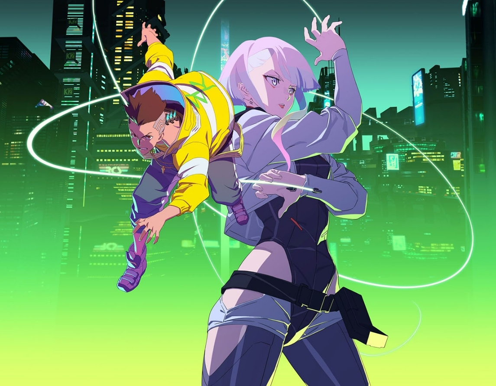

The best Sci-fi anime for new fans:
Sci-fi stories usually explore imaginative and futuristic ideas like advanced science, technology, space exploration, time travel, parallel universes, and even the possibility of extraterrestrial life
Number 1 - Cyberpunk Edgerunners
Cyberpunk Edgerunners is an original anime series set in in the universe of popular videogame 'Cyberpunk 2077' by CD Projekt Red.
Cyberpunk Edgerunners tells a standalone, 10-episode story about a street kid trying to survive in a technology and body modification-obsessed city of the future. Having everything to lose, he chooses to stay alive by becoming an edgerunner—a mercenary outlaw also known as a cyberpunk.
(Source: CD Projekt Red, Anilist)
Honorable mention - Steins Gate

Steins Gate is an interesting show for sure. It is known for having a relatively slow start, and due to this, many people drop it before the story really gets going. Opinions on this show differ: people either hate or love it. From what I've seen though, 99% of people who didn't enjoy Steins Gate, dropped it early on, while the people who love it actually gave it the chance it deserves. Therefor, if you decide to give Steins Gate a chance, I highly recommend you watch at least until episode 12. Around that timeframe is where the story truly kicks in.
Self-proclaimed mad scientist Okabe Rintarou lives in a small room in Akihabara, Tokyo, where he invents "future gadgets" with fellow lab members Shiina Mayuri, his air-headed childhood friend, and Hashida Itaru, an otaku hacker. The three pass the time by tinkering with their latest creation, a "Phone Microwave" that can be controlled through text messages.
The lab members soon face a string of mysterious incidents that lead to a game-changing discovery: the Phone Microwave can send emails to the past and thus alter history. Adapted from the critically acclaimed visual novel by 5pb. and Nitroplus, Steins;Gate takes Okabe to the depths of scientific theory and human despair as he faces the dire consequences of changing the past.
(Source: Anilist)